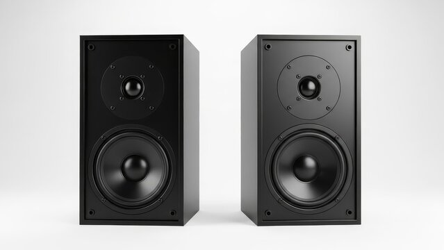
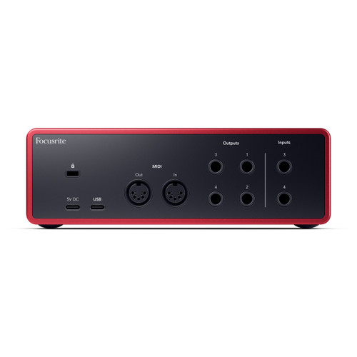
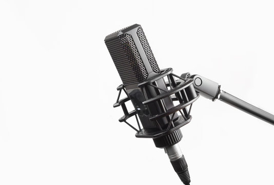
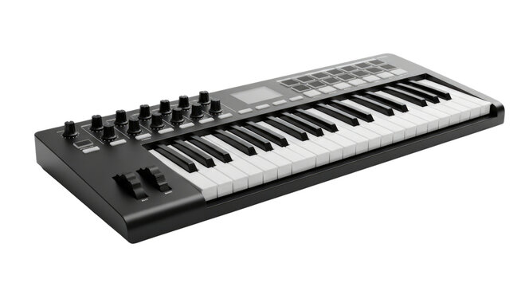
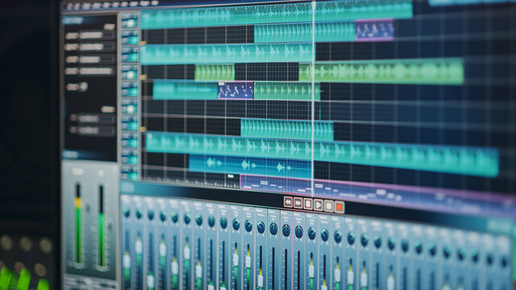
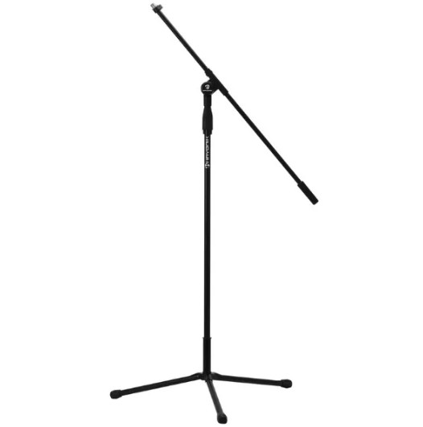
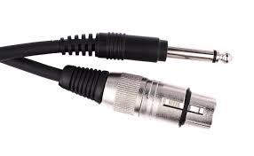
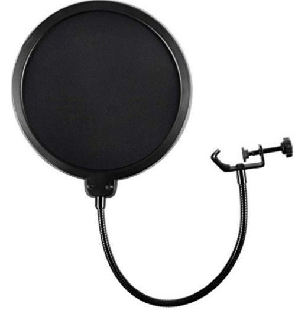

| Equipamento |
Modelo |
Descrição |
 |
Yamaha HS8 |
Monitores de referência amplamente utilizados em estúdios profissionais, oferecendo resposta plana e precisão essencial para mixagens críticas. |
| Genelec 8040B |
Sistema de monitoramento de alto padrão com imagem estéreo precisa e definição excepcional em todas as frequências |
 |
Universal Audio Apollo Twin X |
Interface profissional com conversores de alta qualidade e processamento DSP integrado, permitindo gravações com plugins em tempo real. |
| RME Fireface UFX II |
Interface de nível profissional com estabilidade lendária e conversão de áudio extremamente transparente.
|
 |
Neumann U87 Ai |
Um dos microfones mais icônicos da indústria, conhecido pela clareza, presença e riqueza sonora em gravações vocais. |
| Shure SM7B |
Microfone dinâmico amplamente utilizado em vocais profissionais, com excelente controle de ruído e resposta suave. |
| AKG C414 XLII |
Microfone versátil com múltiplos padrões polares, ideal para gravação de vocais e instrumentos com alta precisão. |
 |
Native Instruments Komplete Kontrol S61 MK3 |
Controlador MIDI profissional com integração avançada, oferecendo controle total sobre instrumentos virtuais e produção musical. |
 |
Beyerdynamic DT 1990 Pro |
Fones de referência abertos com extrema definição e imagem estéreo detalhada para mixagem. |
| Audeze LCD-X |
Fones planares de nível profissional, utilizados em masterização por sua precisão sonora. |
 |
Pro Tools |
Padrão da indústria para gravação, edição e mixagem em estúdios profissionais. |
| Logic Pro |
Plataforma completa para produção musical, com ampla biblioteca sonora e ferramentas avançadas. |
 |
K&M 210/9 Microphone Stand |
Suporte profissional robusto, padrão em estúdios comerciais. |
 |
Mogami Gold Studio XLR Cable |
Cabos de alta qualidade que garantem transmissão de sinal limpa e sem interferências. |
 |
Stedman Proscreen XL |
Pop filter metálico de nível profissional para gravações vocais precisas. |